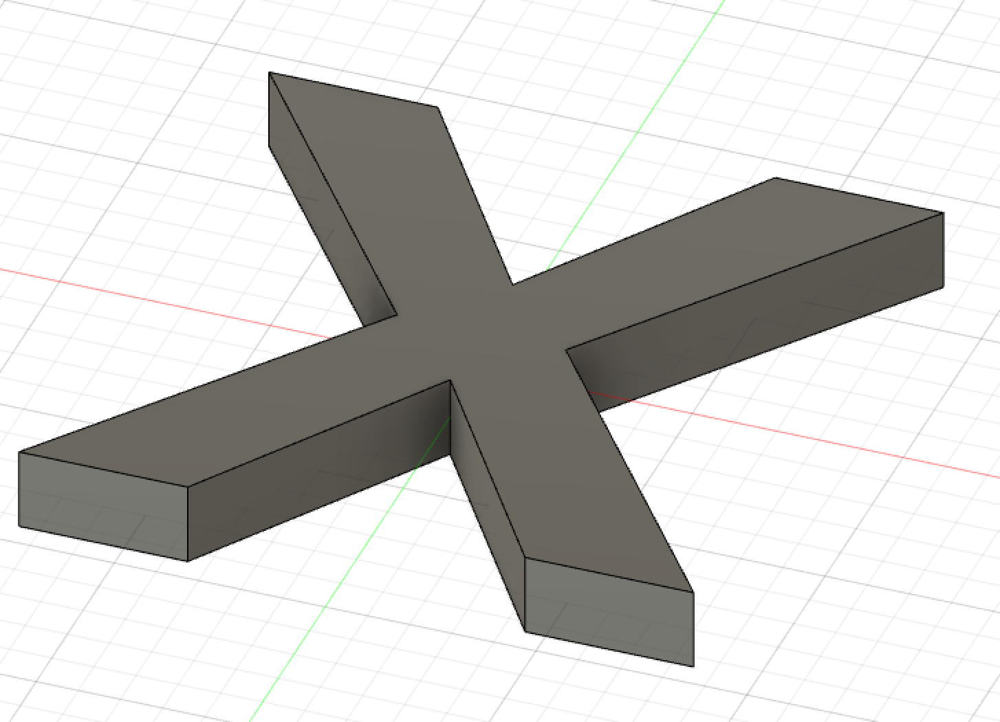
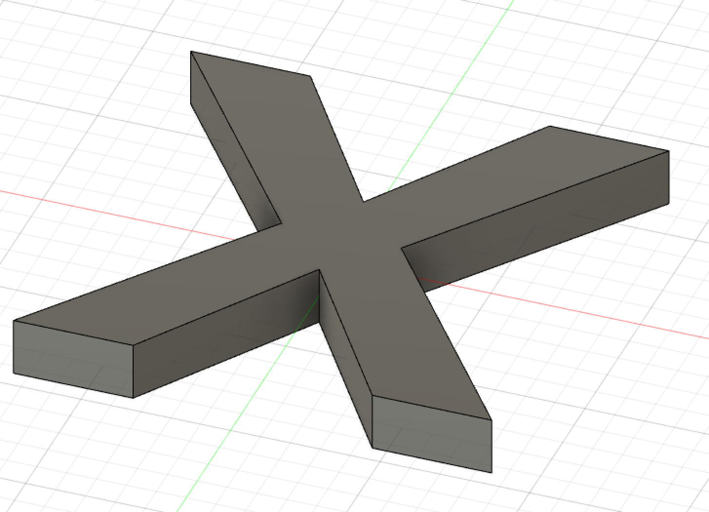

AÐ FRÆSA OG UNDIRBÚA MÓT
Undirbúningur
Þegar hingað var komið í námskeiðinu vorum við orðnir að okkar mati frekar sjóaðir í að teikna í Fushion. Því var undirbúningurinn fyrir þetta verkefni ekki það mikill. Hinsvegar vorum við ekki mjög öryggir með okkur þegar kom að því hvernig skyldi gera mót, því byrjuðum við á því að horfa á þau myndbönd og fyrirlestra sem kennari námskeiðsins setti inn í verkefnalýsinguna. Þessi myndbönd má sjá hér: Tvíhliða mót, undirbúa fyrri negatívu, að undirbúa toolpaths #1, undirbúa toolpaths #2.
Teikning
Hluturinn
Til þess að byrja að teikna mótið byrjuðum við á því að teikna „sketch“ af X-inu sem áætlunin var að mótið myndi búa til. Eftir að hafa gert X-ið „extrude“-uðum við því „two-sided“, upp um 5 mm og niður um 5 mm, þetta var gert til þess að auðvelda okkur að „central“-a X-ið í mótinu.
 

Tvíhliða mót
Við byrjuðum á því að nota skipun sem er undir „construct“ sem heitir „midplane“ til þess að fá plan í gegnum miðjuna á X-inu sem hægt er að vinna út frá. Við bjuggum til „mold box“ þar að segja við bjuggum til „body“ í kringum X-ið, með því að útbúa „sketch“ af ferhyrning sem síðan var „extrude“-aður eins og X-ið með því að nota „two-sided“. Þegar að búið var að gera ferhyrnings „sketch“-ið að „body“-i þá fórum við í „modify“ og völdum þar „split body“, með þeirri skipun völdum við „body to split“ sem „body“-ið og „midplane“-ið sem „splitting tool“.
Þegar hingað er komið er best að „hide“-a annað hvort efra „body“-ið eða það neðra til þess að sjá vel hvað maður er að gera. Þegar við vorum búnir að „hide“-a efri partinn þá völdum við „combine“ til þess að skilja eftir skilrúm þar sem að X-ið er. Við tókum nákvæmlega sömu skref fyrir efri hlutan til og þannig vorum við komnir með holrúm innan í „body“-inu sem var í laginu eins og X-ið sem við vildum.

P.s. í áframhaldandi vinnu þá mælum við mikið með því að notast við „opacity control“ til þess að sjá mun betur hvað á sér stað í skrefunum hér að neðan. Hægt er að sjá hvar það er að finna á myndinni hér að neðan.
Til þess að passa upp á það að formið muni haldast á sínum stað á meðan að sílikonið harðnar þá þarf að bæta við eitthverju sem mun sjá um það. Við ákváðum að hafa „sphere“ á fjórum stöðum á forminu, við bættum þeim við með því að staðsetja þau á þeim stöðum sem við töldum hennta hvað best og pössuðum upp á það að hafa stillt á „join“. Þegar þetta var komið inn þá leit þetta svona út. Eftir þetta notuðum við „combine“ til þess að fá sömu „sphere“ á sama stað nema hvað þær koma inn á hinum partinum.

Til þess að geta helt í mótið þá settum við gat í gegnum það með skipuninni „hole“ við töldum að besti staðurinn til þess að gera gatið svo að mótið myndi fyllast væri á endanum á einum arminum. Á myndinni hér að neðan má sjá hvar og hvernig gatið er. Við létum gatið líta út eins og trekt til þess að auðvelda okkur að hella í það.
Negatíva
Núna var mótið tilbúið en það sem átti eftir að gera var að láta þetta tvíhliðamót verða að negatívu. Það gerðum við með því að nota tólið „align“ sem er að finna undir „modify“ við völdum tvær samhliða hliðar (oft á tíðum þarf að ýta á takka sem heitir „flip“ það þurfti í okkar tilfelli en það er gert svo að mótið snúi rétt). Að lokum notuðum við skipunina „move“ til þess að drga partana tvo aðeins í sundur.
Til þess að búa til mótið sjálft bjuggum við til „body“ yfir allt sem nú þegar var komið og notuðum skipunina „combine“ til þess að „skera“ frá og þannig fullklára mótið.
Í ljósi þess að við erum að gera myllu, þá ákváðum við að búa til annað mót nema hvað fyrir hringi. Við fórum í gegnum nákvæmlega sömu skref og greint er frá hér að ofan, að frá töldu að mótið er ekki fyrir X heldur fyrir O. Mynd af fullkláruðu verkefni má sjá hér að neðan.
Toolpath
Nú þegar að teikningarnar voru tilbúnar þá settum við upp Toolpath og hermdum hvernig ferlið gæti mögulega litið út. Hér að neðan má sjá hvernig það ferli fer fram.
Hönnunarskjöl
Hér má finna hönnunarskjöf fyrir verkefnið.
Næstu skref
Vegna aðstæðna (Covid-19) þá gafst ekki tími til þess að "klára" vekrefnið. Næstu skref eftir þetta væru að fara með þessar teikningar í Fablab þar sem að við myndum fræsa mótin. Eftir að vera komnir með mótin í hendurnar myndum við hella í þau sílikon, með því að hella sílikon í mótin þá fyrst værum við komnir með mót sem hægt væri að nota, við myndum svo setja mótin saman (þess vegna voru settar þessar kúlur svo að allt myndi haldast á réttum stað og eftir það myndum við hella í þau til þess að fá X-in og O-in fyrir mylluna.